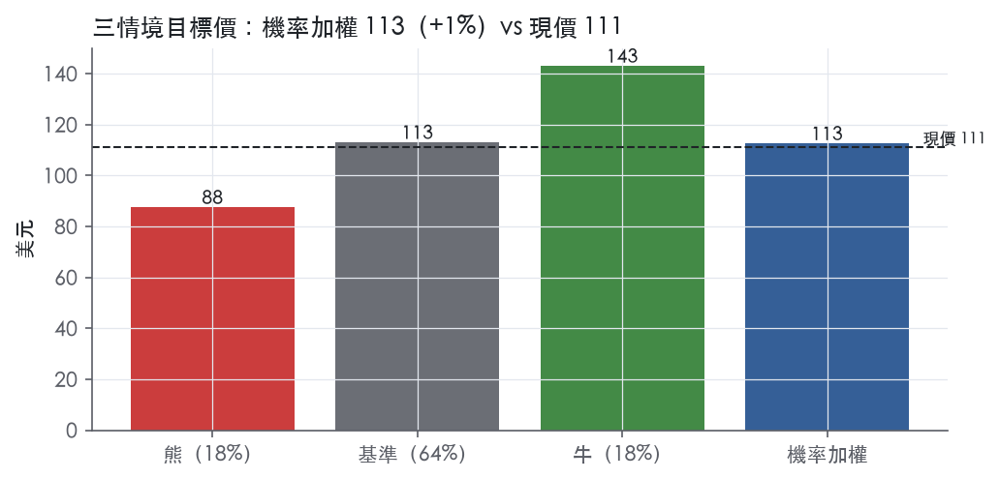
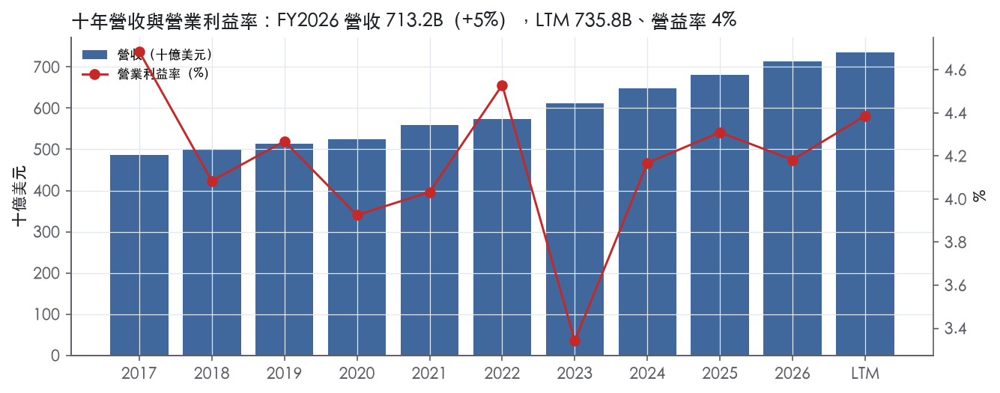
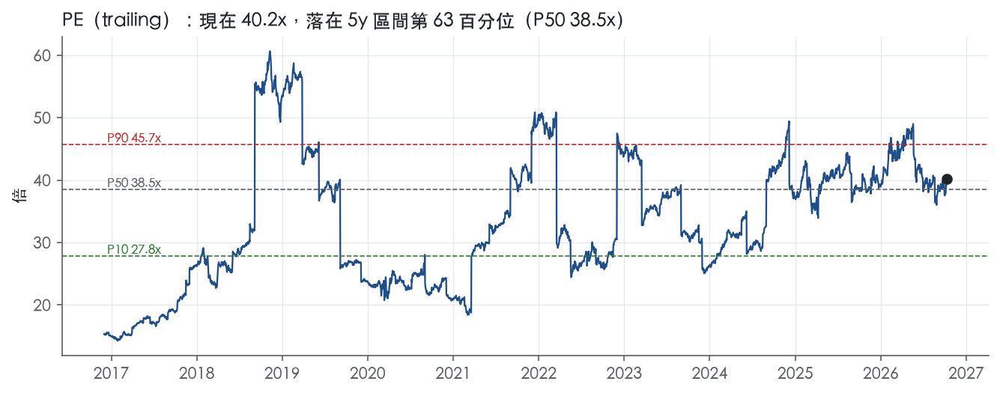
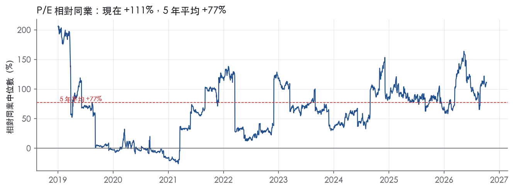
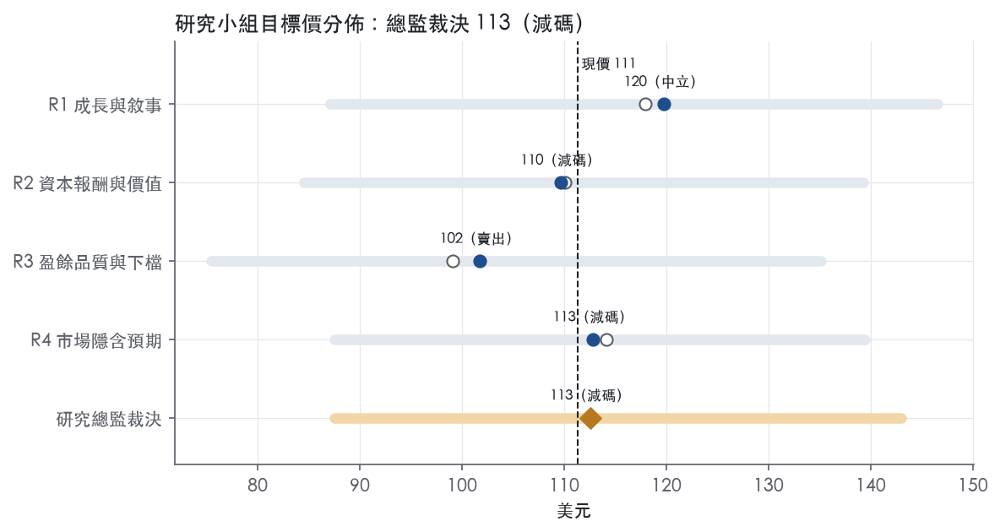
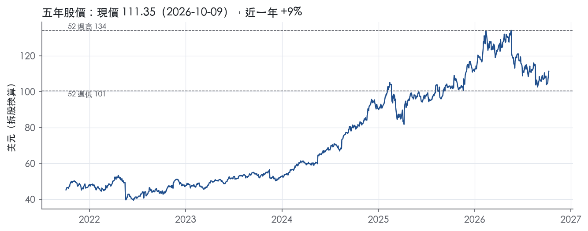

評等總表 › 必需消費 › WMT
利潤率一季不夠、倍數回P75，看空｜評等 減碼｜目標價 113
| 報告日 | 評等 | 目標價 | 當時股價 | 超額報酬 |
|---|---|---|---|---|
| 2026-10-09 | 減碼 | 113 | 111 | -7.8% |
| 評等 | 減碼（邊界，鄰近中立） |
| 12 個月目標價 | 113 美元 |
| 現價 | 111.35 美元（2026-10-09） |
| 預期報酬 | 股價 +1.0%＋股息 0.9%＝總報酬 +1.9%；同業籃門檻 9.7%，超額 -7.8% |
| 估值方法 | P/E 33.0x，套在第 5–8 季的EPS（也就是一年後的未來四季） |
| 三情境 | 熊 88／基準 113／牛 143 |
| 研究流程 | 四位研究員兩輪辯論＋研究總監裁決 |
| 資料來源 | SEC EDGAR XBRL、Tiingo、FRED（全免費） |
利潤率一季不夠、倍數回P75，看空（研究總監裁決，四位研究員兩輪辯論後）
評等 減碼（邊界，鄰近中立）｜12 個月目標價 113 美元（總監三情境機率加權 114 與研究員中位數 111 各半）｜現價 111.35（2026-10-09）
預期報酬：股價 +1.0%＋股息 0.9%＝總報酬 +1.9%。同業籃門檻 9.7%，超額 -7.8%，離中立的分界不到三個百分點，屬邊界評等（落在其他級距的機率約三成）。
估值方法：P/E 33.0x，套在第 5–8 季的EPS（也就是一年後的未來四季）。三情境：熊 88（18%）／基準 113（64%）／牛 143（18%）。
什麼會讓研究總監改變看法：FY2027Q3、Q4 營益率皆 ≥4.8% 且毛利率 ≥25.8%（假設門檻），改採 R1／R4 的營益率路徑並把倍數拉到市場持平 36x；FY2027Q3 毛利率低於 24.9% 則改採熊情境路徑。
| 過去四季（實際，FY2027Q2） | 未來四季 | 第 5–8 季 | 第 9–12 季 | |
|---|---|---|---|---|
| 營收（B） | 735.8B | 780.0B | 819.0B | 855.8B |
| 營收成長 | 6.2% | 6.0% | 5.0% | 4.5% |
| 營業利益率 | 4.4% | 4.5% | 4.6% | 4.6% |
| EPS（美元） | 2.77 | 3.16 | 3.42 | 3.60 |
| EPS 成長 | 4.1% | 14.3% | 8.3% | 5.2% |
| 每股股息（美元） | 0.99 | 0.99 | 0.99 | 0.99 |
| P/E（現價） | 40.2x | 35.2x | 32.5x | 30.9x |
| 股息殖利率（現價） | 0.9% | 0.9% | 0.9% | 0.9% |
過去四季為申報數字；預測為研究總監的假設、程式計算。倍數與殖利率都用現價計算，用來看現價對應各期獲利的高低。
| 情境 | 機率（歷史） | 故事 | 未來四季營收成長 | 第 5–8 季營益率 | 倍數 | 目標價 | 股價漲跌 |
|---|---|---|---|---|---|---|---|
| 熊 | 18%（18%） | 對應風險表第 1 條（關稅轉嫁失敗、毛利率退回 FY2026 的 24.9%、營益率回 4.2%）與第 2 條（消費轉弱、營收降檔），2027-02 新管理層 FY2028 指引保守，倍數回前瞻帶 P50–P75 之間 | 5.0% | 4.3% | 28.0x | 88 | -21.4% |
| 基準 | 64%（66%） | 營益率小幅改善、營收回到 5%，市場一年後只付前瞻帶 P75，不再付今天 P75–P90 的位置 | 6.0% | 4.6% | 33.0x | 113 | 1.5% |
| 牛 | 18%（16%） | Q2 的 5.0% 營益率成為全年常態，廣告與會員費機制證實，市場維持今天的前瞻倍數 36.1x | 6.8% | 5.2% | 36.0x | 143 | 28.4% |
目標價由程式依研究總監的驅動與倍數計算；機率由研究總監給定。括號內是歷史頻率：把這檔股票過去十年 12 個月報酬的波動形狀，置中在基準情境，結果落在各情境附近的比例。

四位研究員用不同方法各自估值，回應研究總監的質疑後交出第二輪，最後由總監逐點裁決。各研究員的主張見第七章，裁決理由見第八章，完整論證見《研究底稿》。
| 立場（一輪→二輪） | 加權目標價（一輪→二輪） | 評等（一輪→二輪） | 第二輪倍數 | 熊～牛目標價 | |
|---|---|---|---|---|---|
| R1 成長與敘事 | 中性→中性 | 118→120 | 中立→中立 | 37.0x | 87～146 |
| R2 資本報酬與價值 | 看空→看空 | 110→110 | 減碼→減碼 | 35.0x | 85～139 |
| R3 盈餘品質與下檔 | 看空→看空 | 99→102 | 賣出→賣出 | 31.0x | 75～135 |
| R4 市場隱含預期 | 中性→看空 | 114→113 | 減碼→減碼 | 32.0x | 88～139 |
| 研究總監裁決 | 看空 | 113 | 減碼 | 33.0x | 88～143 |
目標價由程式依各自的驅動與倍數計算；評等＝機率加權總報酬 − 同業籃門檻。
Walmart 是一家以零售與電商為核心、疊加會員制倉儲（Sam's Club）、健康藥局、金融科技（OnePay）與廣告業務的多資產零售集團。公司在 10-K 中稱其策略為「enterprise strategy」，將傳統零售、會員模式、電商市集（marketplace）、金融服務、健康與保健及其他客戶與企業服務整合成一系列相互連結的資產，目的是讓顧客能無縫地與公司互動¹。客戶面向從日常生活用品採購的一般消費者，到仰賴公司藥局處方與保健服務的病患，再到使用 Sam's Club 會員倉儲服務的中小企業與家庭採購者。公司業務範圍除美國本土外，亦在 Africa、Canada、Central America、Chile、China、India 及 Mexico 經營零售與電商業務¹。FY2027Q2 LTM 營收為 735.84B 美元，顯示公司仍是全球規模最大的零售商之一。
公司財務揭露以 Walmart U.S.、Sam's Club U.S. 與 Walmart International 三大營運分部呈現，10-K 未揭露各分部於本章節的個別營收金額。公司在風險因子章節中揭露，FY2026 Walmart U.S. 與 Sam's Club U.S. 兩個營運分部合計產生約 82% 的合併淨銷售額¹，而 Walmart International 營運產生約 19% 的合併淨銷售額¹。換算下來美國本土業務（含 Sam's Club 美國）為營收主力，國際業務占比約兩成，呈現高度美國集中的收入結構。產品線涵蓋一般商品、食品雜貨、藥局處方與保健產品（在 Walmart U.S. 與 Sam's Club U.S. 兩個分部皆有零售藥局業務，並延伸至 Canada、Mexico 等國際市場）¹。公司亦經營第三方電商市集（marketplace transactions），顧客在公司網站上購買的部分商品由第三方賣家銷售¹。金融服務方面，公司透過多個金融服務夥伴及 OnePay 金融科技合資企業，提供匯款、數位支付平台、代收代付帳單、匯票、兌現支票、預付卡、聯名信用卡、有限度的加密貨幣與股權投資產品、分期貸款與預支工資等服務¹。就毛利率與營益率結構觀察，FY2026 全年毛利率 24.9%、營益率 4.2%（對應年度表），顯示公司維持零售業典型的低營益率、高周轉模式。資本支出占營收比重由 FY2022 的 2.3% 一路墊高到 FY2026 的 3.7%（年度表資本支出/營收欄位），反映公司近年對供應鏈自動化與數位基礎建設的持續加碼。
公司的顧客與通路結構以美國為核心、輔以精選新興市場布局。渠道上，公司採全通路（omnichannel）策略，顧客可透過實體門市、Sam's Club 倉儲、網站、行動應用程式、社群媒體及新興的 agentic 平台進行購物與比價¹。公司提供多種取貨、宅配與配送方案，包括線上購買、門市或 Sam's Club 現場取貨的選項，此舉同時為門市與俱樂部帶來額外人流¹。公司持續投資供應鏈自動化與全通路強化措施，以支持此一策略¹。在藥局通路上，公司於 Walmart U.S. 與 Sam's Club U.S. 兩分部於美國全境及 Canada、Mexico 等國際市場經營零售藥局，絕大多數藥局淨銷售額來自與私人保險公司、政府機構及藥品福利管理公司（PBM）間既有的第三方支付合約關係¹。公司在 Mexico、India（透過旗下 Flipkart 子公司）與 Canada 面臨反壟斷與競爭法相關的監理審查¹，顯示國際市場的法遵與監理成本是通路擴張的重要變數。整體而言，美國本土仍是客戶基礎與現金流的主要來源，國際市場則扮演成長選配角色。
本次未取得 8-K 新聞稿原文，以下僅依資料包季度數字整理趨勢，無法引用公司次季指引原文。FY2026Q3（期末 2025-10-31）營收 179.50B 美元、年增 5.8%，毛利率 25.0%、營益率 3.7%（等對應季度表）。FY2026Q4（期末 2026-01-31，年度倒推）營收 190.66B 美元、年增 5.6%，營益率回升至 4.6%，為近八季最高。FY2027Q1（期末 2026-04-30）營收 177.75B 美元、年增擴大至 7.3%，但自由現金流轉為 -1.95B 美元，顯示當季營運現金流偏弱、資本支出或營運資金消耗較大。FY2027Q2（期末 2026-07-31，為最新一季）營收 187.94B 美元、年增 5.9%，毛利率攀升至 26.1%、營益率達 5.0%，為近八季最佳獲利水準，淨利 6.37B 美元、EPS 0.80 美元（等對應季度表）。整體看，近四季營收年增穩定在 5–7% 區間，獲利率呈逐季改善趨勢，FY2027Q2 的營益率與毛利率雙雙創近兩年新高。
公司將廣告與其他高毛利率業務列為成長引擎，預期長期可帶動營業利益成長速度快於淨銷售額成長速度¹。公司持續投資人工智慧，用以提升顧客購物體驗與員工工作體驗，並改善供應鏈、營運、管理職能與人才招募發展的效率¹。公司表示正投資供應鏈自動化與全通路能力強化，以支持其全通路銷售策略，並致力於打造跨所有通路、由各營運分部交付的無縫購物體驗，同時維持與顧客的直接關係¹。公司的 enterprise strategy 核心是把零售、會員制、電商市集、金融服務、健康保健等資產整合成一套互聯體系，讓顧客能無縫互動¹。
公司近期營益率與毛利率同步走升（FY2027Q2 營益率 5.0%、毛利率 26.1%），顯示廣告、會員費與電商市集等高毛利業務的占比提升確實正在發生，與公司自述的策略方向一致。但 FY2027Q1 自由現金流轉負顯示資本支出與營運資金波動仍是觀察重點，尤其在關稅環境持續不確定（公司在風險因子中明確提及 FY2026 已受進口關稅影響，且預期 FY2027 此動態環境將持續）的背景下，毛利率能否維持上升軌跡仍待驗證。整體而言，Walmart 的成長故事正從「規模零售商」逐步轉型為「零售+會員+廣告+金融科技」的多元獲利引擎，但美國本土營收占比仍高達八成以上，國際市場的監理摩擦（Mexico、India、Canada）是中期需要持續追蹤的風險。

Walmart 的護城河評為寬，核心是規模帶來的採購與物流成本優勢；我們有把握其 ROIC 未來 10 年以上仍高於資本成本。趨勢判為穩定而非變寬，原因是近三年 ROIC 走高的同時資本支出墊高、FCF 利潤率下滑，廣告與市集等新優勢來源也還無法從揭露數字獨立驗證。
主要來源是成本優勢，次要來源是仍在早期的網路效應；無形資產、轉換成本與效率規模證據不足，不列入。
成本優勢：公司表示全球採購是其財務表現的重要因素，並要求供應商能以「the large volumes we may demand」及時供貨²。LTM 營收 735.84B 美元所代表的採購量，是同業難以複製的議價基礎。公司自述顧客仰賴其以「affordable price」提供品質商品，並持續投資供應鏈自動化以支撐全通路策略²。許多線上商品可在當地 Walmart 門市或 Sam's Club 取貨，並為門市與俱樂部帶來額外來客²。既有實體網絡因此被重複利用為電商履約節點，攤薄單位物流成本，成本優勢得以從實體延伸到線上。
網路效應（早期）：公司經營第三方市集，網站上部分商品由第三方賣家銷售²。公司預期廣告與其他高毛利業務在長期會帶動營業利益成長快於淨銷售額²。來客規模吸引賣家與廣告主，賣家擴充品項再強化來客，這是雙邊網路效應的雛形；但資料中沒有市集或廣告的獨立營收，本次評級不計入這項來源。
未列入的類別：公司承認無法確保第三方不會獨立開發出同等或更佳的智慧財產權²。顧客會透過網站、App 與 agentic 平台在公司與競爭者之間比價²。品質問題也可能讓顧客改向其他零售商購買²。上述原文顯示消費端轉換成本低，品牌不構成獨立於低價之外的護城河。
看得到：ROIC 與利潤率穩定度都支持寬評級，衝突集中在現金流端。ROIC 十年平均 15.4%、最低 12.7%，資本成本代理值 10.2%，有資料的 9 年全數高於資本成本。ROIC 標準差 2.6%、毛利率標準差 0.4%、營業利益率標準差 0.3%；這十年經歷疫情、通膨與關稅衝擊仍維持這種穩定度，符合成本優勢者能吸收外部衝擊的特徵。
衝突一：ROIC 最低值 12.7% 對資本成本代理值 10.2% 的緩衝不厚。這個代理值又隨 10 年債 5.22走高，若獲利再出現 FY2023 那樣的下探（營益率 3.3%；ROIC 12.7%），超額報酬空間會明顯收窄。我們仍維持寬評級，理由有二：最差年度仍高於資本成本，且最近三年 ROIC 分別為 18.1%、19.1%、17.7%，緩衝正在加厚而非變薄。
衝突二：FCF 利潤率最新值 2.1%，低於十年平均 2.9%。同期資本支出/營收由 2.2%升至 3.7%。ROIC 的改善有一部分是用更高投資換來的，新投資能否維持報酬尚待驗證，所以趨勢給「穩定」而不給「變寬」。
最大的侵蝕風險是比價成本下降與競爭生態系整合，其次是關稅與人力成本削弱成本優勢的實際傳遞。
相對零售同業，目標倍數應給溢價：寬護城河支撐 10 年以上的超額報酬期，終值階段不必假設 ROIC 迅速回歸資本成本。但趨勢只是穩定而非變寬，目前 EV/EBITDA 19.6x 已位於五年 77.5% 分位、高於 5y P50 14.3x，P/E 40.2x 也高於 10y P50 31.7x。因此溢價幅度應以公司自身五年中位數為上限，不應再為護城河加價。
| 指標 | 最新 | 十年平均 | 標準差 | 最低 | 最高 |
|---|---|---|---|---|---|
| ROIC | 17.7% | 15.4% | 2.6% | 12.7% | 19.1% |
| 毛利率 | 24.9% | 24.9% | 0.4% | 24.1% | 25.6% |
| 營業利益率 | 4.2% | 4.2% | 0.3% | 3.3% | 4.7% |
| FCF 利潤率 | 2.1% | 2.9% | 1.0% | 1.9% | 4.6% |
| ROE | 23.0% | 17.2% | 4.3% | 8.9% | 23.0% |
程式計算。資本成本代理值（10 年債＋5%）：10.2%；ROIC 平均減資本成本：5.1%；ROIC 有資料的 9 年中，高於資本成本 9 年。
營業現金流／淨利 LTM 1.94x、三年均值 2.03x、十年均值 2.40x，仍全部落在綠燈區但趨勢向下（量化底稿：盈餘品質計分表）。自由現金流／淨利 LTM 只有 0.61x，低於十年均值 1.30x，燈號已轉黃，貼近紅燈門檻 0.60x。應計比率連年為負（LTM -7.1%、三年 -7.3%、十年 -7.3%），顯示盈餘不是靠應計項目堆出來的，這點支撐了「盈餘可信」的基本面。整體評級打在「中」，是因為自由現金流覆蓋率的弱化需要解釋，但解釋得通，不構成盈餘灌水的證據。
跟得上，但跟得沒有過去十年那麼寬鬆。CFO／淨利从 FY2017-2021 常態在 2x 以上、甚至部分年度逼近 3x 以上，LTM 收斂到 1.94x，仍是現金大於淨利（量化底稿年度表）。FCF／淨利的弱化不是現金流品質變差，而是分母（淨利）成長的同時，資本支出占營收從 FY2017 的 2.2% 一路爬升到 FY2026 的 3.7%（資料包年度表），這是公司主動擴大電商、自動化、供應鏈投資的結果，10-K 明確寫到持續加碼「eCommerce, technology, AI, talent, supply chain automation」等投資，且承認這些投資短期會拖累財務表現：「the cost of certain investments in eCommerce, technology, talent and automation…will adversely impact our financial performance in the short-term」²。存貨成長與營收成長的差距只有 -0.4pp，顯示營運資金沒有在吃掉現金。整體看，現金流覆蓋盈餘的能力沒有結構性惡化，只是資本密集度提高把FCF邊際壓薄。
本次沒有取得最新財報新聞稿，因此無法逐項列出公司揭露的非 GAAP 調整項目（如 SBC、攤銷、重組費用的具體金額）。從量化底稿看，SBC／營收規模很小，LTM 無獨立揭露但三年均值僅 0.4%、十年均值 0.2%，遠低於 8% 紅燈門檻。以 Walmart 的業務規模與股權激勵占營收比例來看，即使不做任何 SBC 加回，對盈餘品質的影響也微乎其微。缺少新聞稿是本章的限制，若後續能取得逐季財報稿，應補上非 GAAP 淨利與 GAAP 淨利的具體差額，目前只能以量化底稿的 SBC／營收比例作為替代佐證。
槓桿與付息能力都在安全區間，沒有舉債支撐盈餘的痕跡。淨負債／EBITDA LTM 0.82x、三年均值 0.76x、十年均值 0.93x，全部遠低於 1.50x 綠燈上限。利息保障倍數 LTM 17.4x，顯著高於三年均值 12.6x 與十年均值 11.8x，付息能力在改善，不是在惡化。稀釋股數年變動 LTM -0.3%，三年均值 -0.7%，十年均值 -1.7%，公司持續用回購淨減少股數，稀釋風險是負值、對每股盈餘是加分而非紅旗。（股利＋回購）／淨利 LTM 66.5%、三年均值 62.1%，均低於十年均值 103.9%——過去十年曾經出現回饋股東比例超過100%、隱含靠舉債回饋股東的情況，但近年比例已降到合理區間、低於淨利，顯示資本配置紀律在改善，不是在惡化。10-K 也將股票回購與股利來源列為前瞻性聲明的風險項目之一，說明公司對資金來源保持揭露紀律：「the Company continuing to provide returns to shareholders through share repurchases and dividends…or the source of funding of a certain portion of our share repurchases」²。
計分表九項指標中八項為綠燈，唯一的黃燈是「自由現金流／淨利」，LTM 0.61x 低於綠燈門檻 0.90x，接近紅燈門檻 0.60x。這不是未解釋的真紅旗：拆解年度資本支出／營收比率可見持續走高（FY2017 2.2% → FY2026 3.7%），而 CFO／淨利同期仍維持 1.9x 以上的健康水準，代表現金流出是用在資本支出而非盈餘品質惡化（量化底稿年度表）。10-K 風險因子章節也明確點名這類投資會在短期內拖累財務指標，與黃燈訊號方向一致，屬於公司主動揭露、可解釋的狀況，不應視為盈餘操縱的警訊。其餘八項（CFO／淨利、應計比率、SBC／營收、淨負債／EBITDA、利息保障倍數、稀釋股數變動、股東回饋比率、存貨與營收成長差）全部落在綠燈，程式未標出任何未解釋的紅旗。
估值研究員可以用 GAAP 盈餘作基礎、不需要額外打折，因為應計比率長期為負且現金流覆蓋盈餘穩定在 1.9x 以上，盈餘沒有被應計項目或一次性非 GAAP 調整撐大的證據。唯一要微調的是用自由現金流估值（P/FCF、FCF 殖利率）時要意識到資本支出占營收走高是結構性而非暫時性，FCF 殖利率 1.5%（trailing，資料包快照）偏低主要反映高資本支出周期，不是現金流被operating層面侵蝕。槓桿（淨負債／EBITDA 0.82x）與利息保障（17.4x）都在安全區間，不構成限制估值倍數的理由，目前 P/E 40.2x 處於五年分位 63%、EV/EBITDA 19.6x 處於 77.5% 分位，偏高主要是市場給的成長溢價問題，而非盈餘品質問題需要折價反映。
| 項目 | LTM | 近三年 | 十年 | 燈號 | 規則 |
|---|---|---|---|---|---|
| 營業現金流／淨利 | 1.94x | 2.03x | 2.40x | 綠 | ≥1.00x 綠、<0.80x 紅 |
| 自由現金流／淨利 | 0.61x | 0.77x | 1.30x | 黃 | ≥0.90x 綠、<0.60x 紅 |
| 應計比率（(淨利−CFO)／平均總資產） | -7.1% | -7.3% | -7.3% | 綠 | ≤0.0% 綠、>5.0% 紅 |
| SBC／營收 | — | 0.4% | 0.2% | 綠 | ≤3.0% 綠、>8.0% 紅 |
| 淨負債／EBITDA | 0.82x | 0.76x | 0.93x | 綠 | ≤1.50x 綠、>3.00x 紅 |
| 利息保障倍數（營業利益／利息） | 17.4x | 12.6x | 11.8x | 綠 | ≥8.00x 綠、<3.00x 紅 |
| 稀釋股數年變動 | -0.3% | -0.7% | -1.7% | 綠 | ≤0.0% 綠、>3.0% 紅 |
| （股利＋回購）／淨利 | 66.5% | 62.1% | 103.9% | 綠 | ≥50.0% 綠、<0.0% 紅 |
| 存貨成長 − 營收成長（FY2026） | -0.4pp | — | — | 綠 | ≤5pp 綠、>15pp 紅 |
程式計算；燈號以 LTM（無則近三年平均）判定。
Walmart 目前 trailing P/E 40.2x（5年分位 63%）、EV/Sales 1.3x（5年分位 83.5%）、P/FCF 65.8x（5年分位 80.4%），市場已用高倍數為「廣告＋會員＋電商市集推升毛利率」的敘事定價。但公司營收八成以上集中於美國（Walmart U.S.＋Sam's Club U.S. 合計約 82% 淨銷售額）¹，FCF 近兩季波動劇烈（FY2027Q1 為 -1.95B，FY2027Q2 回升至 7.47B），顯示獲利改善的穩定性尚未經過完整驗證。真正會動到盈餘或倍數的，是關稅成本能否持續轉嫁、毛利率上升趨勢能否延續、以及第三方市集與 AI 應用帶來的法遵/聲譽風險。
| 風險 | 觸發指標（看什麼數字、在哪裡看） | 對 EPS 的影響方向與粗略幅度 | 未來 12 個月發生機率（高／中／低） | 出處 |
|---|---|---|---|---|
| 1. 關稅與貿易政策成本轉嫁失敗，壓縮毛利率 | 季度毛利率（is.gross_margin，財報）；美國對進口商品關稅稅率公告 | 負向，中～大（毛利率已從 FY2026Q3 25.0% 升到 FY2027Q2 26.1%，若倒退 50–100bp 即可侵蝕數個百分點 EPS） | 高 | ²＋【判，數字來自量化底稿】 |
| 2. 宏觀消費力轉弱（通膨、失業率、信用可得性）壓低同店銷售與客單價 | 季度淨銷售額年增率（is.revenue 年增，財報）；美國 CPI、失業率（FRED） | 負向，中～大（營收年增已在 5–7% 區間，若跌破 3% 將同時壓縮營益率槓桿） | 中 | 10-K 年報 FY2026 Item 1A（風險因素） |
| 3. 全通路／AI／供應鏈自動化投資的執行與資本支出效率風險 | 資本支出/營收比（dv.capex_to_sales，年度表，已從 2.3% 升至 3.7%）；FCF 季度數字（財報） | 負向，中（若投資未轉化為營益率改善，FCF 將持續波動，如 FY2027Q1 的 -1.95B）【判，數字引自量化底稿】 | 中 | 10-K 年報 FY2026 Item 1A（風險因素） |
| 4. 網路安全事件／AI 技術誤用導致客戶資料外洩或信任流失 | 公司是否公告重大資安事件（8-K／Item 1C）；客流量與同店銷售後續變化 | 負向，方向明確、幅度大（公司承認 FY2026 已發生資安事件，雖未達重大）² | 中 | 10-K 年報 FY2026 Item 1A（風險因素） |
| 5. 第三方市集（marketplace）產品責任與監理界線不明，導致訴訟或罰款 | 新增訴訟揭露（Item 3 Legal Proceedings）；監理機關（如 Mexico、India、Canada 競爭法主管機關）新裁罰公告 | 負向，方向明確、幅度小～中（屬一次性費用，不改變核心營運趨勢） | 低 | ²＋¹ |
關稅轉嫁失敗是當前最具體、最可監測的風險，因為公司在前瞻聲明章節明確列出「關稅稅率的變更或修改、新關稅的徵收或新稅的課徵」作為會影響業績的因子²，且供應商風險段落直接寫出「美國及國際貿易政策、關稅、貿易壁壘及其他進出口限制」為超出公司控制的風險²。業務概況章也指出 FY2026 已受進口關稅影響。觀察指標很乾淨：季度毛利率若連續兩季下滑超過 50bp，就是轉嫁失敗的訊號。目前毛利率處於近八季高點（FY2027Q2 26.1%），下行空間存在但尚未發生，故列為機率「高」（政策本身持續變動）、影響「中～大」。
消費力轉弱風險對應 10-K 原文整段列舉的宏觀因子：「higher interest rates…higher consumer debt levels…overall economic slowdown or recession…could adversely affect consumer demand」²。Walmart 的 EDLP 定位理論上在衰退中有防禦性，但公司自己承認衰退仍會「change the mix of products…with a lower average gross margin」及「slower inventory turnover and greater markdowns」²，即消費降級會拖累毛利率結構，不是單純的量增。觀測指標用美國 CPI 與失業率（目前 CPI 年增 3.71%、Fed Funds 3.75%）配合公司季度營收年增率交叉比對。
資本支出效率風險是估值能否維持高倍數的核心變數。資本支出占營收比從 FY2022 的 2.3% 一路墊高到 FY2026 的 3.7%（年度表），而 FCF 季度數字呈現劇烈鋸齒（FY2026Q2 6.52B → FY2026Q3 1.88B → FY2026Q4 6.10B → FY2027Q1 -1.95B → FY2027Q2 7.47B）。如果投資沒有轉化為營益率提升，P/FCF 65.8x 的估值（5年分位 80.4%）就缺乏支撐。這條風險公司在 10-K 中以「cost of certain investments in eCommerce, technology, talent and automation…will adversely impact our financial performance in the short-term」直接承認²。
網路安全風險公司罕見地在 10-K 中承認「fiscal 2026 期間」已發生資安事件²，雖未造成重大財務衝擊，但公司同時警告 AI 技術的進步正在「intensified existing cybersecurity risks by enabling faster and more automated attack techniques」²。一旦發生大規模資料外洩，對品牌信任與客流量的傷害是這份報告反覆強調的連鎖反應（「could quickly erode trust and confidence in our business」）²。監測方式是追蹤 8-K 重大事件揭露與 Item 1C Cybersecurity 揭露的更新頻率。
第三方市集責任風險機率與影響都相對較小，因為公司已在國際市場（Mexico、India、Canada）面臨反壟斷與競爭法監理審查¹，疊加 10-K 承認「unsettled law on whether a retailer is responsible for intellectual property or product liability claims related to marketplace transactions」²。這類風險通常以一次性罰款或和解費用呈現，不改變核心營運趨勢，但仍值得放進清單因為市集業務正是公司自稱的高毛利成長引擎之一。
估值已無安全邊際，任何「普通的不如預期」都可能觸發倍數壓縮。公司目前 trailing P/E（40.2x）、EV/EBITDA（19.6x）、P/FCF（65.8x）都站在 5 年區間的 63–80 分位，而 10 年 P/E 中位數僅 31.7x。這代表市場定價已隱含持續的毛利率擴張敘事，一旦單季毛利率或營益率不及上一季（如 FY2027Q2 的 26.1%／5.0%），即便絕對數字仍健康，股價對「邊際減速」的敏感度會遠高於過去十年的歷史經驗。
管理層近期密集更替（CEO、CFO 層級以下多位 EVP 於 2025–2026 年剛上任）帶來執行連續性的不確定性。業務概況章列出的高管異動（John Furner 2026/02 升任 CEO、David Guggina 2026/02 接任 Walmart U.S. CEO、Christopher Nicholas 2026/02 接任 International CEO、Latriece Watkins 2026/02 接任 Sam's Club CEO）集中在同一個月發生，三大分部負責人同時換人，在「enterprise strategy」這種高度仰賴跨分部協調執行的策略下，新團隊磨合期的執行風險未被 10-K 風險因子章節單獨列出，但值得作為觀察重點，可觀測指標是下兩季各分部營益率是否出現非季節性的異常波動。
現價 111.35 對應 trailing（過去四季）P/E 40.2x、EV/EBITDA 19.6x、EV/EBITA 28.7x、EV/Sales 1.3x、FCF 殖利率 1.5%。主要估值倍數 P/E 現在 40.2x，落在5 年區間第 63 百分位（P10／P50／P90 = 27.8x／38.5x／45.7x）。

把程式的機械基準預測放到現價下，市場付的前瞻倍數是：P/E（未來四季） 36.1x、P/E（第 5–8 季） 33.8x。反推 DCF 顯示市價隱含未來五年營收年成長 34.2%（WACC 9.0%、終值成長 3.0%、FCF 利潤率 1.4%，SBC 不加回）。
| 倍數 | 現在 | 5 年 P10 | 5 年 P50 | 5 年 P90 | 現在分位 | 全期 P50 |
|---|---|---|---|---|---|---|
| P/E | 40.2x | 27.8x | 38.5x | 45.7x | 63.0% | 31.7x |
| EV/EBITDA | 19.6x | 11.5x | 14.3x | 21.9x | 77.5% | 12.9x |
| EV/EBITA | 28.7x | 16.4x | 21.6x | 32.4x | 78.6% | 19.2x |
| EV/EBIT | 28.7x | 16.4x | 21.6x | 32.4x | 78.6% | 19.2x |
| EV/Sales | 1.3x | 0.7x | 0.8x | 1.3x | 83.5% | 0.7x |
| P/S | 1.2x | 0.6x | 0.8x | 1.3x | 83.3% | 0.7x |
| P/FCF | 65.8x | 22.7x | 54.2x | 71.5x | 80.4% | 24.4x |
trailing 倍數（股價 ÷ 過去四季）；分位以每個交易日計算。
同業籃：COST, TGT, DG, BJ, DLTR, PSMT（SIC 5331 同業 9 家中，CY2025 營收最接近的 6 家）。評等門檻 9.7%：同業「倍數不變下持有一年」的隱含報酬中位數（＝ FCF 殖利率 ×(1＋g)＋g，g 為 5 年營收年複合成長並夾在 −2%～8%），每家夾在 0～15%、P/E 低於 5 倍視為資料可疑而排除，中位數再限制在 10 年債到 10 年債＋5% 之間。
| 代號 | 市值 | 5 年營收 CAGR | 營益率 | ROIC | P/E | 5 年 P/E 中位數 | EV/EBITDA | P/FCF | 隱含報酬 |
|---|---|---|---|---|---|---|---|---|---|
| WMT | 888.4B | 5.0% | 4.4% | 17.7% | 40.2x | 38.5x | 19.6x | 65.8x | 6.6% |
| COST | 419.7B | 9.1% | 3.8% | 43.6% | 47.6x | 50.6x | 29.4x | 47.7x | 10.3% |
| TGT | 69.8B | 2.3% | 5.6% | 17.9% | 16.0x | 16.2x | 8.9x | 15.7x | 8.8% |
| DG | 28.2B | 4.8% | 5.6% | 13.8% | 16.5x | 18.9x | 8.8x | 14.0x | 12.3% |
| BJ | 12.5B | 6.8% | 3.8% | 24.1% | 21.6x | 20.9x | 11.3x | 34.8x | 9.9% |
| DLTR | 22.3B | -5.3% | 11.0% | 21.4% | 14.6x | — | — | 11.3x | 6.7% |
| PSMT | 5.2B | 9.6% | 4.5% | 15.4% | 32.2x | 21.6x | 14.4x | 70.7x | 9.5% |
| 同業中位數 | 5.8% | 5.1% | 19.6% | 19.1x | 20.9x | 11.3x | 25.2x | 9.7% |
全部 trailing，程式以各公司 SEC XBRL 與 Tiingo 行情計算；第一列為本檔。
P/E 相對同業中位數：現在 110.9%，過去 1 年平均 98.4%、3 年 82.2%、5 年 77.3%；EV/EBITDA 相對同業中位數：現在 72.0%，過去 1 年平均 93.9%、3 年 75.4%、5 年 47.5%。

事後實現前瞻倍數帶（P/E，2018-09-17..2025-09-15）：P10／P50／P90 = 18.7x／27.2x／37.4x。它是每個交易日的股價除以之後四季實際實現的指標；一年後，今天的第 5–8 季正是那時的未來四季，所以這條帶是 12 個月目標價的同口徑倍數。因為用的是事後實際而非當時預期，過去成長超乎預期的公司這條帶會偏低。
程式的機械基準（成長率從過去四季年增率三年收斂到 6%、利潤率持平）用 事後實現前瞻 P/E P50 估值得到 90（-19.4%），市場現行前瞻倍數（現價 ÷ 基準 未來四季指標）一年後持平，套在基準 第 5–8 季指標得到 119。這兩個數字只是參考點，不是本報告的目標價；研究員對這個定價的回應在第七章。
下表是每位研究員第一輪（各自獨立）與第二輪（回應研究總監的質疑後）的結果。目標價全由程式依各自的假設計算。
| 立場（一輪→二輪） | 加權目標價（一輪→二輪） | 評等（一輪→二輪） | 第二輪倍數 | 熊～牛目標價 | |
|---|---|---|---|---|---|
| R1 成長與敘事 | 中性→中性 | 118→120 | 中立→中立 | 37.0x | 87～146 |
| R2 資本報酬與價值 | 看空→看空 | 110→110 | 減碼→減碼 | 35.0x | 85～139 |
| R3 盈餘品質與下檔 | 看空→看空 | 99→102 | 賣出→賣出 | 31.0x | 75～135 |
| R4 市場隱含預期 | 中性→看空 | 114→113 | 減碼→減碼 | 32.0x | 88～139 |
| 研究總監裁決 | 看空 | 113 | 減碼 | 33.0x | 88～143 |
目標價由程式依各自的驅動與倍數計算；評等＝機率加權總報酬 − 同業籃門檻。
分歧度：第一輪 加權目標價 99～118（區間＝現價的 17%）· 倍數 31～37x · 立場 中性×2、看空×2；第二輪 加權目標價 102～120（區間＝現價的 16%）· 倍數 31～37x · 立場 中性×1、看空×3。

| 研究員 | 第二輪主張 | 堅持的理由 |
|---|---|---|
| R1 成長與敘事 | 中性。營益率三年後到 5.0%，給 37x 未來一年 P/E。 | 營益率上修只進 EPS，倍數不再加價，避免重複計價。 |
| R2 資本報酬與價值 | 看空。給 35x 未來一年 P/E，介於十年與五年中位數之間。 | 自由現金流殖利率只有 1.5%，現金轉換惡化，35x 不上調。 |
| R3 盈餘品質與下檔 | 看空。盈餘品質沒有問題，營益率持平 4.4%，給 31x 前瞻 P/E。 | 機制沒有完整財年紀錄，FY2026 營益率 4.2% 反低於 FY2025。 |
| R4 市場隱含預期 | 看空。給 32x 前瞻 P/E，市場已預支利潤率擴張。 | 市場高估中期營收與現金轉換，資本支出 4.0% 不會回落。 |
每位研究員的逐條回應與完整論證見《研究底稿》（WMT_研究底稿_2026-10-12.docx）。
| 分歧點 | R1 成長 | R2 價值 | R3 品質 | R4 預期 | 什麼資料會分出勝負 |
|---|---|---|---|---|---|
| Q5–Q8 營益率（op_margin_y2） | 4.7%，y3 5.0%：Q2 毛利率 26.1% 突破八季區間、10-K 廣告機制 | 4.6%：ROIC 平台上移但停止變寬 | 4.4% 持平：FY2026 4.2% 低於 FY2025 4.3%，機制無完整財年紀錄 | 4.8%，y3 5.0%：反推 DCF 顯示市場在定價利潤率擴張、Q3 基期 3.7% | FY2027Q3（2026-11）、Q4（2027-02）營益率對去年同季 3.7%／4.6%；FY2027 全年是否 ≥4.5% |
| 目標倍數與錨 | 37x@ntm，5 年 P50 下方 | 35x@ntm，10 年與 5 年 P50 之間，現金含量下降 | 31x@q5_q8，前瞻帶 P50–P75，P/E 同業溢價 110.9% 為 5 年高點 | 32x@q5_q8，前瞻帶 P75 下方，零報酬 33.8x 已高於 P75 | FY2027 資本支出／營收是否 ≥3.5%；EV/EBITDA 同業溢價是否 ≤65%；一年後股價對 124（市場持平參考點） |
| NTM 營收成長（rev_growth_y1） | 5.8% | 5.5% | 5.5% | 6.0%：LTM 節奏延續，中期才降檔 | FY2027Q3 營收年增對去年同季 5.8%；FY2027Q4 是否 ≤5.5% |
| 熊情境深度與對應風險 | 31x@ntm、營益率 4.0%，風險表 1、2 條 | 30x@ntm、營益率 4.0%，FY2023 路徑 | 26x@q5_q8、營益率 4.1%、股數 0，風險表第 1 條 | 28x@q5_q8、營益率 4.2–4.4%，風險表第 1 條＋2027-02 新管理層指引 | FY2027Q3、Q4 毛利率是否連兩季年減逾 50bp；FY2028 指引（約 2027-02） |
分歧一：Q5–Q8 營益率——選 R2（4.6%）。 R3 的 4.4% 持平，理由是 LTM 已含 FY2027Q2 的 5.0%，但同一個 LTM 也含八季最低的 FY2026Q3 3.7%，兩端互抵；持平等於假設毛利率連續兩季年增（FY2027Q1 25.1% 對 24.9%、FY2027Q2 26.1% 對 25.2%，dv.gross_margin 對應季）在未來一年全數吐回，這需要關稅轉嫁失敗的證據，不能預設。R1、R4 把 y3 推到 5.0%，高於十年年度高點 4.7%；而機制寫進 10-K 後的第一個完整財年 FY2026 營益率 4.2% 反而低於 FY2025 的 4.3%（FY2025），10-K 又明說短期投資會拖累表現、FY2027 關稅環境持續，一季紀錄撐不起十年未見的全年水準。R2 的 4.5%／4.6% 是「低基期滾出、組合改善部分兌現」，兩邊證據都照顧到。
分歧二：目標倍數——own，33x eps@q5_q8，錨在事後實現前瞻帶 P75 32.9x。 R3 的「同業溢價為 5 年高點、個股在重估」只在 P/E 尺成立；R4 用同業表證明 EV/EBITDA 溢價 72.0% 低於 1 年平均 93.9%、約等於 3 年平均 75.4%，P/E 溢價則被 FY2026Q4 淨利 4.24B 對 EBITDA 12.45B的營業外雜訊墊高。R3 沒有同業表，看不到這點，錨退回。R3 以帶的 P50 27.2x 為基礎還有第二個問題：劇本註明此帶在成長期低於當時真正的前瞻倍數，2018–2025 正是 WMT 重估期。R1 的 37x@ntm 錨在 5 年 P50 38.5x 下方，但 5 年帶的高位本身就是他說會收斂的那段重估，等於用結論當錨。R2、R4 指出的個股因素我接受：FCF／淨利 0.61x、P/FCF 65.8x 對 10 年 P50 24.4x、資本支出／營收 3.7%、ROIC 由 19.1% 回到 17.7%（FY2026）——1.5% 的 FCF 殖利率拿不出支撐更高倍數的現金。但我不跟到 R4 的 P75 下方：護城河章把溢價上限定在自家 5 年中位數（對應市場持平參考點 119），毛利率兩季年增也不支持一年內跌出頂端四分位。33x 落在 P75、低於零報酬倍數 33.8x 與市場持平 36.1x，意思是「市場一年後仍付頂端四分位，不再付今天 P75–P90 的位置」；隱含 EV/EBITDA 請程式補算。
分歧三：NTM 營收成長——選 R4（6.0%）。 R2、R3 的 5.5% 建立在 FY2024→FY2026 年度降檔（6.0%→5.1%→4.7%），但 FY2027Q1、Q2 年增 7.3%、5.9%（dv.revenue_growth 對應季）已打破此趨勢，CPI 年增 3.71%仍撐名目成長。四位在 y2 一致給 5.0%，等於同業表的 5 年營收 CAGR 5.0%，我接受；y3 跟 R1、R3、R4 的 4.5%，不影響 Q5–Q8 主尺。
分歧四：熊情境——選 R4。 R3 的熊情境 75.40以他 100.56 的基準為中心才落在歷史 15% 區；套到我較高的基準，距離會進入置中分布 ≤−30% 歷史頻率 0% 的區域，且同時疊加營益率 4.1%、股數歸零與 26x，是 FY2023 式衰退與倍數重估同時發生。R4 的熊情境毛利率退回 FY2026 全年 24.9%、營益率退回 4.2%，對應風險表第 1 條（關稅轉嫁失敗，季度毛利率可監測）與第 2 條（營收降到 5.0%／4.0%），再加 2027 年 2 月新管理層首次全年指引這個有日期的事件，28x 回到前瞻帶 P50 與 P75 之間，深度與機制都站得住。
漂移處理：無退回。 漂移表無程式旗標；R4 靠攏 32% 來自我在 E1 要求的立場修正與 E4 的風險表對應，R3 靠攏 18% 來自 Q1 的歷史基準率證據，接受意見皆附證據。R3、R4 拒絕 Q4、E4 的新聞稿前提成立：材料清單列有新聞稿，但資料包內無原文，業務概況章與盈餘品質章皆註明未取得，本裁決同樣不引用 FY2027 指引與達成紀錄。R4 把熊機率升到 25% 不是漂移，但理由不足，見三情境節。利率：R2 已撤回 V6，四人無人再用 10 年債壓倍數；本裁決只在比較預期報酬時引用 10 年債 5.22%。
與機械基準不同的驅動：
目標倍數 33x eps@q5_q8。口徑：前瞻帶配 q5_q8，33x 即事後實現前瞻帶 P75 32.9x，低於零報酬倍數 33.8x 與市場持平參考點 36.1x（P75 與 P90 之間）。換到 trailing 口徑看：對應目標價低於「5 年 P50 38.5x 套 NTM」的 119 與「現行 40.2x 持平」的 124，高於 10 年 P50 31.7x 所隱含的位置，即一年後 trailing 倍數低於 1／3／5 年 P50（40.4x／39.1x／38.5x），仍在 10 年 P50 之上。相對同業：P/E 溢價 110.9% 被 FY2026Q4 雜訊墊高，以 EV/EBITDA 溢價 72.0% 為乾淨讀數，33x 隱含溢價由 1 年平均 93.9% 往 3 年平均 75.4% 收斂，不假設回到 5 年平均 47.5%；相對大盤倍數資料包無數據，不主張。低於市場持平的理由全為個股因素（FCF／淨利 0.61x 貼近紅燈、資本密度 3.7%→4.0% 不回落、ROIC 由 19.1% 回到 17.7%、護城河「穩定而非變寬」），不用利率。
機率依歷史基準率：置中分布 ≥+20% 歷史 11%、≥+10% 20%、≤−20% 6%、≤−10% 22%；R1、R4 相近距離的程式對照落在 19%／14–16%，我的兩側一半距離頻率都在 17–18% 附近，程式會精算。我不往任何一側偏離：風險表第 1 條的「高」機率已透過 4.5%／4.6% 而非 4.8%／5.0% 的營益率進了基準情境，不再算一次成熊（R4 的 25% 因此不採）；管理層換血在 FY2027Q1、Q2 新團隊任內交出八季最佳營益率，無執行失誤證據；牛側只有一季紀錄，也不足以高於歷史。熊不高於牛是對本部門 22 份報告偏誤的修正，不是慣例。
差距在倍數，不在盈餘。我們的 Q5–Q8 盈餘假設略高於機械基準（營益率 4.6% 對 4.4%，營收 y2 5.0% 對 6.0% 大致互抵），市場現價付的是 pe_Q5-Q8 33.8x 零報酬、36.1x 持平的前瞻位置，反推 DCF 更隱含市場在定價 FCF 利潤率大幅擴張，而 FCF／淨利 0.61x、資本支出 4.0% 讓這條路一年內走不到。立場看空，與程式評等方向一致：機率加權總報酬預期在低個位數，低於同業門檻 9.7%，也低於 10 年債 5.22%；若程式算出中立，差距只在門檻邊界，不改變「不如同業籃與債券」的判斷。
現價 111.35 → 點估目標價 113 → 機率加權目標價 114 → 目標價 113，差距拆成五段：成長順延 +8 美元（市場現行倍數 36.1x 一年後持平、獲利照機械基準）；倍數差 -10 美元（總監倍數 33.0x vs 市場持平倍數 36.1x，同一機械基準預測）；盈餘差 +4 美元（總監預測的第 5–8 季EPS 0.0B vs 機械基準 0.0B，同一倍數）；情境不對稱 +1 美元（機率加權減點估）；研究小組平均 -1 美元（總監機率加權 114 與研究員第二輪中位數 111 各半）。各段相加等於目標價減現價。本階段未接賣方共識，差距以市場隱含預期為對照。
| 驅動 | 機械基準 | 研究總監 | 差異 |
|---|---|---|---|
| 未來四季營收成長 | 6.1% | 6.0% | -0.1 pp |
| 第 5–8 季營收成長 | 6.0% | 5.0% | -1.0 pp |
| 第 9–12 季營收成長 | 6.0% | 4.5% | -1.5 pp |
| 未來四季營益率 | 4.4% | 4.5% | +0.1 pp |
| 第 5–8 季營益率 | 4.4% | 4.6% | +0.2 pp |
| 第 9–12 季營益率 | 4.4% | 4.6% | +0.2 pp |
| D&A／營收 | 2.1% | 2.1% | ＝ |
| 資本支出／營收 | 4.0% | 4.0% | ＝ |
| SBC／營收 | 0.0% | 0.5% | +0.5 pp |
| 稅率 | 24.4% | 24.4% | ＝ |
| 股數年變動 | -0.5% | -0.5% | ＝ |
研究總監只寫偏移，未寫的沿用基準。
| 期 | 營收 | 成長 | 營益率 | 營業利益 | EBITDA | EBITA | 淨利 | EPS | FCF | 期末淨負債 |
|---|---|---|---|---|---|---|---|---|---|---|
| 未來四季 | 780.0B | 6.0% | 4.5% | 35.1B | 51.1B | 35.1B | 25.1B | 3.16 | 13.8B | 39.8B |
| 第 5–8 季 | 819.0B | 5.0% | 4.6% | 37.7B | 54.5B | 37.7B | 27.1B | 3.42 | 15.2B | 39.3B |
| 第 9–12 季 | 855.8B | 4.5% | 4.6% | 39.4B | 56.9B | 39.4B | 28.3B | 3.60 | 15.9B | 38.0B |
程式依上表的驅動計算；季度用最近四季季節性分攤；不含營運資金變動。
估值方法：P/E 33.0x，套在第 5–8 季的EPS（也就是一年後的未來四季）。研究總監目標倍數的錨：事後實現前瞻 P/E 帶 P75 32.9x；低於零報酬 33.8x 與市場持平 36.1x，個股因素為 FCF／淨利 0.61x、資本密度 3.7%→4.0%、ROIC 19.1%→17.7%、護城河穩定非變寬；EV/EBITDA 同業溢價由 1 年平均 93.9% 向 3 年平均 75.4% 收斂。
計算：EPS（第 5–8 季） 3.42 × 33.0x → 點估目標價 113（1.5%）；隱含 P/E（未來四季）35.7x、P/E（第 5–8 季）33.0x、EV/EBITDA（第 5–8 季）17.1x、FCF 殖利率（第 5–8 季）1.7%。
總監三情境機率加權目標價 114，研究員第二輪中位數 111，兩者各半＝目標價 113；預期報酬 股價 +1.0%＋股息 0.9%＝總報酬 +1.9%；減評等門檻 9.7%（同業籃隱含報酬中位數（COST, TGT, DG, BJ, DLTR, PSMT））＝超額報酬 -7.8% → 評等 減碼（超額 >+15% 買進、+5～+15% 加碼、±5% 中立、−5～−15% 減碼、<−15% 賣出）。同一份資料重開研究小組，超額約有正負四個百分點的雜訊（一個標準差，二十檔實測）；以此估計，評等落在其他級距的機率約三成。超額離中立的分界不到三個百分點，應視為邊界評等。
| 情境 | 機率 | 未來四季成長 | 第 5–8 季成長 | 第 5–8 季營益率 | EPS（第 5–8 季） | 倍數 | 目標價 |
|---|---|---|---|---|---|---|---|
| 熊 | 18% | 5.0% | 4.0% | 4.3% | 3.13 | 28.0x | 88 |
| 基準 | 64% | 6.0% | 5.0% | 4.6% | 3.42 | 33.0x | 113 |
| 牛 | 18% | 6.8% | 6.2% | 5.2% | 3.97 | 36.0x | 143 |
| 主張 | 驗證日 | 看哪個數字 | 門檻 |
|---|---|---|---|
| FY2027Q3 營益率高於去年同季 3.7% 但不及 Q2 的 5.0% | 2026-11-30 | 4.0%–4.7% | |
| FY2027 全年營益率高於 FY2026 的 4.2%、不突破十年高點 | 2027-03-31 | 4.4%–4.7% | |
| FY2027Q3 毛利率守住去年同季水準，關稅轉嫁未失敗 | 2026-11-30 | >=25.0% | |
| FY2027 資本密度不回落 | 2027-03-31 | >=3.5% | |
| 市場一年後不付現行前瞻倍數持平的價格 | 2027-10-11 | px.price | <124 |
到期由程式結算（第 5 階段帳本）。
內文上標數字對應下列公司申報文件；未標上標的分析與判斷，是研究小組的觀點。報告中的每個數字都經程式逐一核對資料包或原文。
| 期 | 營收 | 成長 | 毛利率 | 營益率 | EBITDA | 淨利 | EPS | CFO | FCF | ROIC | 淨負債 | 稀釋股數 |
|---|---|---|---|---|---|---|---|---|---|---|---|---|
| FY2017 | 485.9B | — | 25.6% | 4.7% | 32.8B | 13.6B | 1.46 | 31.7B | 21.1B | — | 32.5B | 9.3B |
| FY2018 | 500.3B | 3.0% | 25.4% | 4.1% | 31.0B | 9.9B | 1.09 | 28.3B | 18.3B | 12.9% | 32.3B | 9.0B |
| FY2019 | 514.4B | 2.8% | 25.1% | 4.3% | 32.6B | 6.7B | 0.75 | 27.8B | 17.4B | 12.7% | 42.9B | 8.8B |
| FY2020 | 524.0B | 1.9% | 24.7% | 3.9% | 31.6B | 14.9B | 1.73 | 25.3B | 14.6B | 13.5% | 40.2B | 8.6B |
| FY2021 | 559.2B | 6.7% | 24.8% | 4.0% | 33.7B | 13.5B | 1.58 | 36.1B | 25.8B | 13.5% | 26.8B | 8.5B |
| FY2022 | 572.8B | 2.4% | 25.1% | 4.5% | 36.6B | 13.7B | 1.62 | 24.2B | 11.1B | 18.1% | 23.3B | 8.4B |
| FY2023 | 611.3B | 6.7% | 24.1% | 3.3% | 31.4B | 11.7B | 1.42 | 28.8B | 12.0B | 12.7% | 30.6B | 8.2B |
| FY2024 | 648.1B | 6.0% | 24.4% | 4.2% | 38.9B | 15.5B | 1.91 | 35.7B | 15.1B | 18.1% | 30.6B | 8.1B |
| FY2025 | 681.0B | 5.1% | 24.9% | 4.3% | 42.3B | 19.4B | 2.41 | 36.4B | 12.7B | 19.1% | 30.0B | 8.1B |
| FY2026 | 713.2B | 4.7% | 24.9% | 4.2% | 44.0B | 21.9B | 2.73 | 41.6B | 14.9B | 17.7% | 34.0B | 8.0B |
SEC XBRL；每股數據已依拆股換算到現在股數基準。EBITDA 空白 = 該年無形攤銷在 companyfacts 中缺 tag。
| 期 | 期末 | 推導 | 營收 | 毛利率 | 營益率 | EBITDA | 淨利 | EPS | CFO | FCF | 現金 | 總債務 |
|---|---|---|---|---|---|---|---|---|---|---|---|---|
| FY2024Q3 | 2023-10-31 | 160.8B | 24.6% | 3.9% | 9.2B | 0.5B | 0.06 | 0.8B | -4.6B | 12.2B | 49.1B | |
| FY2024Q4 | 2024-01-31 | Q4 | 173.4B | 24.0% | 4.2% | 10.4B | 5.5B | 0.68 | 16.7B | 10.8B | 9.9B | 40.5B |
| FY2025Q1 | 2024-04-30 | 161.5B | 24.8% | 4.2% | 10.0B | 5.1B | 0.63 | 4.2B | -0.4B | 9.4B | 43.2B | |
| FY2025Q2 | 2024-07-31 | 169.3B | 25.1% | 4.7% | 11.2B | 4.5B | 0.56 | 12.1B | 6.3B | 8.8B | 40.1B | |
| FY2025Q3 | 2024-10-31 | 169.6B | 24.9% | 4.0% | 10.0B | 4.6B | 0.57 | 6.6B | 0.4B | 10.0B | 40.5B | |
| FY2025Q4 | 2025-01-31 | Q4 | 180.6B | 24.6% | 4.4% | 11.2B | 5.3B | 0.65 | 13.5B | 6.4B | 9.0B | 39.1B |
| FY2026Q1 | 2025-04-30 | 165.6B | 24.9% | 4.3% | 10.5B | 4.5B | 0.56 | 5.4B | 0.4B | 9.3B | 46.2B | |
| FY2026Q2 | 2025-07-31 | 177.4B | 25.2% | 4.1% | 10.8B | 7.0B | 0.88 | 12.9B | 6.5B | 9.4B | 43.5B | |
| FY2026Q3 | 2025-10-31 | 179.5B | 25.0% | 3.7% | 10.3B | 6.1B | 0.77 | 9.1B | 1.9B | 10.6B | 46.4B | |
| FY2026Q4 | 2026-01-31 | Q4 | 190.7B | 24.7% | 4.6% | 12.4B | 4.2B | 0.53 | 14.1B | 6.1B | 10.7B | 44.8B |
| FY2027Q1 | 2026-04-30 | 177.8B | 25.1% | 4.2% | 11.3B | 5.3B | 0.67 | 4.7B | -1.9B | 10.7B | 51.5B | |
| FY2027Q2 | 2026-07-31 | 187.9B | 26.1% | 5.0% | 13.3B | 6.4B | 0.80 | 15.0B | 7.5B | 11.5B | 50.4B |
流量項目由 10-Q 的年初至今數拆成單季；Q4 = 年度 − 九個月。

本報告由 equity-desk 多代理系統產出，建置中版本，僅供內部研究與方法驗證，不構成投資建議。所有數字以 datapack.json 為準。